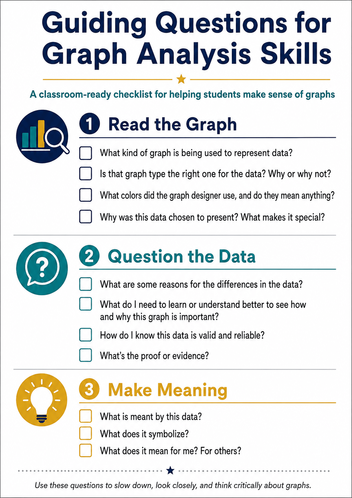

Students graph class or science observations twice using different colors, scales, or graph types. Partners use the analysis checklist to decide which version communicates most honestly and clearly.
Quick Chart or Picture Graph · 45–60 minutesGraphSplat Examples
TEKS-Aligned Science + Mathematics Lesson Plans
Three inquiry-based investigations help K–12 students collect authentic science data, represent it with GraphSplat, analyze patterns, and defend evidence-based conclusions.
TEKS correlations were checked against the Texas Education Agency Chapter 111 Mathematics and Chapter 112 Science standards available August 2026. District scope and sequence may vary.
Use with every GraphSplat example
Guiding Questions for Graph Analysis Skills
Before students create a graph, use the checklist to analyze an existing example. After students publish, partners repeat the same questions as a peer-review protocol. This separates three important habits: accurately reading the display, questioning the quality of its data, and explaining what the evidence means.
Accessible checklist transcript
1. Read the Graph
- What kind of graph is being used to represent data?
- Is that graph type the right one for the data? Why or why not?
- What colors did the designer use, and do they mean anything?
- Why was this data chosen to present? What makes it special?
2. Question the Data
- What are some reasons for the differences in the data?
- What do I need to understand better to see why this graph is important?
- How do I know the data is valid and reliable?
- What is the proof or evidence?
3. Make Meaning
- What is meant by this data?
- What does it symbolize?
- What does it mean for me and for others?

GraphSplat Sample Lessons
Artful Analytics: Tell a Story with Data
These short classroom starters adapt the article's central ideas—make graphs visually engaging, use them to tell a story or explain a project, let students design their own visuals, and export work for discussion—using GraphSplat's local-first workspaces.
Teams collect two related classroom quantities, express their relationship as ratios, and create grouped bars. Students write a caption explaining what the visual reveals that the table alone does not.
Quick Chart · Mathematics ratios and proportional reasoningStudents predict outcomes for dice, coins, or spinners, conduct repeated trials, and compare theoretical and experimental results with a two-series chart. They explain differences using sample size and chance.
Quick Chart · Mathematics probability and statisticsStudents record distance over time for a rolling object, build a line or scatter graph, and connect steepness to rate of change. They redesign the chart for a younger audience without changing its meaning.
XY Scatter + Expression Calculator · Math and physical scienceTeams graph reaction time or rate under changing temperature or concentration. Students highlight a meaningful region, identify limitations, and export an annotated visual with a claim-evidence-reasoning caption.
Quick Chart · Chemistry investigation dataStudents combine polynomial, exponential, or trigonometric expressions into a purposeful visual, then explain how each transformation changes both the mathematical features and the composition.
Expression Calculator or Polar Chart · Algebra II/PrecalculusSchoolyard Biodiversity Snapshot
Overview
Student teams survey equal-sized schoolyard areas, tally observable organisms or signs of organisms, and create scaled graphs. They compare habitats and use their evidence to recommend one realistic action that supports a healthy campus ecosystem.
Learning Objectives
- Plan and conduct a safe descriptive field investigation.
- Collect categorical observations consistently and organize them in a table.
- Create and interpret a scaled pictograph or bar graph.
- Use graph evidence to explain how organisms interact with living and nonliving parts of a habitat.
TEKS Correlations
Mathematics: 3.8(A)–(B), summarize categorical data with frequency tables, dot plots, pictographs, or scaled bar graphs and solve problems from those displays; 4.9(A)–(B), represent and interpret one-variable data; 5.9(A)–(C), represent categorical/numerical data, paired data, and solve problems using graphs.
Science: 3.1(E)–(F), collect evidence and organize it in tables or graphs; 3.2(B)–(C), identify patterns and use calculations; 4.1(E)–(F) and 4.2(B)–(C), collect, graph, analyze, and compare evidence; 5.1(E)–(F), 5.2(B)–(C), and 5.12(A)–(C), analyze ecosystem interactions and effects of environmental change.
Materials
- GraphSplat on one device per team
- Clipboard, tally sheet, pencils, hand lenses, and optional hoops/string for equal sample areas
- Teacher-approved outdoor area and required safety supplies
Instructional Plan
Getting Started
- Show two contrasting campus habitats. Ask how a fair comparison could be made.
- Teams define categories such as insect, bird, plant type, fungi, or evidence of animal activity.
- Agree on equal observation time and sample area; review do-not-touch and weather safety rules.
Activating
Display a small sample tally. Ask: Which graph makes the quantities easiest to compare? What should one picture represent? How could the scale alter a reader's impression?
Acquiring
- Teams observe two sites for the same amount of time and record counts without disturbing organisms.
- Students enter category totals into GraphSplat. Grades 3–4 may use Picture Graph; Grade 5 may use grouped bars or a scatterplot when paired numerical data are available.
- Students add a precise title, labels, scale/key, and observation-site attribution.
Applying
Teams compare graphs and identify the strongest pattern, an unexpected result, and one limitation. Each team proposes a campus action—such as adding native plants or reducing litter—and supports it with at least two graph-based observations.
Assessment
- Accurate data table and graph with an honest scale
- Two correct comparisons or one/two-step solutions from the graph
- Claim-evidence-reasoning paragraph grounded in collected data
Differentiation and Extension
Provide icons and sentence stems for developing learners. Advanced students can repeat sampling on another day, compare variability, or calculate differences and ratios.
Campus Microclimate: Shade, Surface, and Temperature
Overview
Students test whether shade coverage or surface type is associated with campus surface temperature. Teams collect repeated measurements, build scatterplots or comparative charts, and use patterns—not isolated readings—to recommend a heat-reduction strategy.
Learning Objectives
- Design a fair comparative investigation with controlled measurement procedures.
- Collect quantitative SI data and document relevant qualitative observations.
- Construct and interpret a scatterplot for association.
- Distinguish association from proof of causation and explain sources of error.
TEKS Correlations
Mathematics: 6.12(A)–(D), represent and summarize numerical and categorical data; 7.12(F)–(G) and 7.13(A)–(C), use samples to make cautious population inferences; 8.5(C), use tables or graphs to determine rate of change and intercept; 8.11(A)–(C), construct scatterplots, describe association, and reason about samples.
Science: 6.1(E)–(F), 7.1(E)–(F), and 8.1(E)–(F), collect quantitative/qualitative data and organize it in graphs; 6–8.2(B)–(C), analyze patterns, error, and quantitative relationships; 8.11(A)–(B), use evidence to describe natural and human influences on climate.
Materials
- GraphSplat, infrared thermometer or temperature probe, meter tape, timer, and data sheet
- Optional light meter or a consistent 0–100% visual shade-estimation guide
- Teacher-selected safe surfaces: grass, soil, concrete, asphalt, or shaded pavement
Instructional Plan
Getting Started
- Present the question: “How is shade associated with surface temperature on our campus?”
- Students identify independent, dependent, and controlled variables and develop a repeatable measurement protocol.
- Review outdoor and instrument safety.
Activating
Ask students to sketch the scatterplot they predict before collecting data. Discuss why time of day, recent rain, surface material, and measurement distance could affect results.
Acquiring
- At 10–15 locations, record shade percentage, surface temperature in °C, surface type, time, and relevant conditions.
- Enter shade as x and temperature as y in GraphSplat's XY Scatter chart.
- Make a second categorical chart comparing mean temperature by surface type, if time permits.
Applying
Students describe the direction, form, and apparent strength of association; identify clusters and outliers; and explain why the study does or does not establish causation. Teams propose where shade trees, structures, or different materials might reduce heat, acknowledging data limitations.
Assessment
- Reproducible method and complete data table
- Correctly labeled scatterplot with defensible interpretation
- Recommendation supported by pattern evidence and a limitation statement
Differentiation and Extension
Offer a prepared data set when fieldwork is inaccessible. Extend by repeating measurements at multiple times, finding rate of temperature change, or comparing random samples from larger class data.
Biodiversity and Ecosystem Stability Model
Overview
Students analyze a teacher-provided or locally collected data set pairing a biodiversity indicator with an ecosystem-stability measure. They graph the data, propose and evaluate a linear model, examine outliers, and use evidence to explain the limits of prediction and causation.
Learning Objectives
- Organize bivariate science data and identify significant features, patterns, error, and limitations.
- Describe association and distinguish it from causation.
- Develop a reasonable linear model and interpret its slope and intercept in context.
- Use the model and biological reasoning to make a bounded prediction about ecosystem change.
TEKS Correlations
Mathematics—Algebra I: A.3(A)–(C), determine slope/rate of change and graph linear functions; A.4(A)–(C), interpret correlation, compare association and causation, and write reasonable linear fits for real-world data. Mathematical process standards A.1(A)–(G) support modeling, tool use, representation, and justification.
Science—Biology: B.1(E)–(F), collect and organize quantitative/qualitative evidence using scatterplots, line graphs, and data tables; B.2(B)–(C), analyze statistical features, patterns, error, limitations, and quantitative relationships; B.13(A)–(D), evaluate ecological relationships, disruptions, cycles, biodiversity, and ecosystem stability.
Materials
- GraphSplat and a biodiversity/stability data set with at least 12 paired observations
- Data dictionary identifying units, sampling method, and limitations
- Optional field quadrats or an approved open ecological data source
Instructional Plan
Getting Started
- Define the biodiversity indicator (for example, species richness) and stability indicator (for example, percent biomass retained after disturbance).
- Students inspect metadata, identify variables, and predict the relationship.
- Discuss sampling bias, confounding variables, and why correlation alone cannot establish causation.
Activating
Show two small data subsets that suggest different trends. Ask what additional evidence is needed and how scale or omitted observations could mislead a reader.
Acquiring
- Enter paired observations in GraphSplat's XY Scatter workspace and label units and source.
- Estimate a reasonable line using two representative points. Calculate slope and intercept, then graph the equation in Expression Calculator.
- Compare predicted and observed values. Identify outliers and calculate selected residuals.
Applying
Students write a claim about biodiversity and stability, cite graphical and numerical evidence, explain a plausible biological mechanism, and identify at least two limitations. They make one interpolation and one extrapolation, then judge which is more defensible and why.
Assessment
- Accurate scatterplot and contextual linear model
- Correct interpretation of slope, association, outliers, and prediction limits
- Claim-evidence-reasoning response connecting the mathematical pattern to ecosystem concepts
Differentiation and Extension
Provide a partially completed table and model scaffold as needed. Extend by comparing two habitats, testing a nonlinear model, calculating residual summaries, or evaluating how removing an influential point changes the conclusion.
← Return to GraphSplat Examples
Standards Sources
Texas Education Agency: 19 TAC Chapter 111—Mathematics and 19 TAC Chapter 112—Science. Teachers should confirm local pacing and any subsequent standards updates before instruction.